| Version History |
| Introduction |
| Adding Simple Containers |
| Adding Trapped Containers |
Version History
1.0 Initial release 1.1 "Trap Launch Point" description corrected and "Scripting Name" information added.
Introduction
This tutorial will teach you how to place containers into your area. 'Containers' is an umbrella word as it covers almost anything that can contain one or more items (usually a treasure). They can be trapped or untrapped - we will be dealing with both types in this tutorial.
Like the other tutorials, this one is set in my seatown somewhere on the Sword Coast; this time we are in one of the deserted houses.
I have no idea where you will be creating your mod, so I am going to assume that all of the relevant files are in your \bg2\override directory.
Unless you've changed your browser fonts to something weird and wonderful, the conventions in this tutorial are that blue is action and black is descriptive.
Start DLTCEP if it's not already running.
|
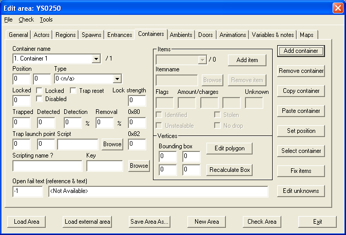 Image 1 - the blank Containers tab |
The house has a single chest left behind in it, so we will activate this as a container and place a single gold piece in it for the PC to find.
The reason for so many different container types in this list is their toolbar icon and their different in-game sounds.
|
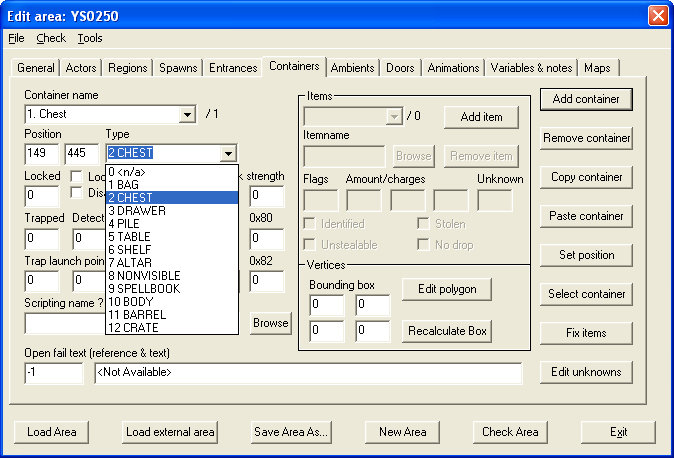 Image 2 - Container types |
This will bring up the preview screen.
|
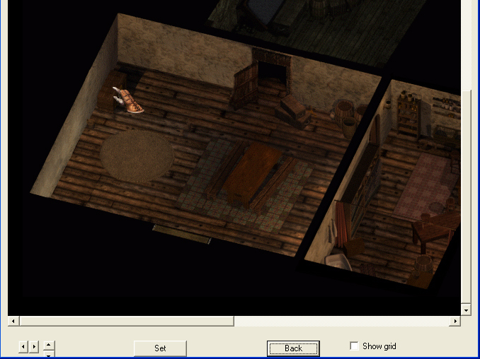 Image 3 - the Set Position preview screen |
Again, I suspect that in reality you only need to do this for a trapped container but as I've said before, there's no need to upset the Infinity Engine if we can avoid it. I'm now going to add that single, miserable gold piece.
|
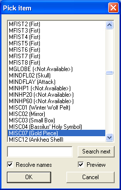 Image 4 - the Item browser |
|
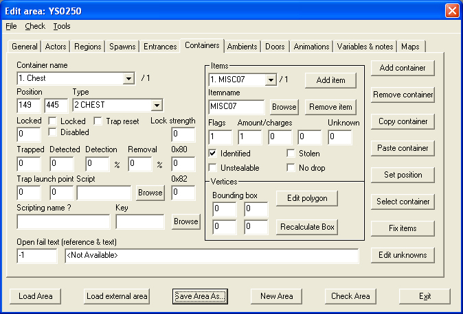 Image 5 - One gold piece.... |
Continue to add items as you require; for each item that has multiple charges e.g. wands you also need to specify how many charges the item has. We now need to add the in-game outline that identifies a container.
This brings up the polygon editor
|
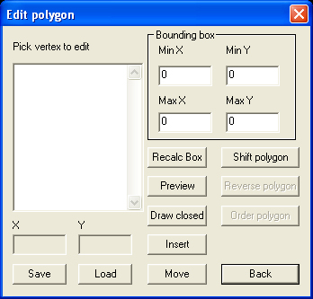 Image 5 - The Polygon Editor |
This will load the Preview screen, puts the Polygon Editor into Insert mode and should display your area, but sometimes it sits there as a big blank box. If this happens,
That usually fixes it. Carefully draw an outline around the area you want to act as a container - each time you click on the screen another vertex will be added to the list.
|
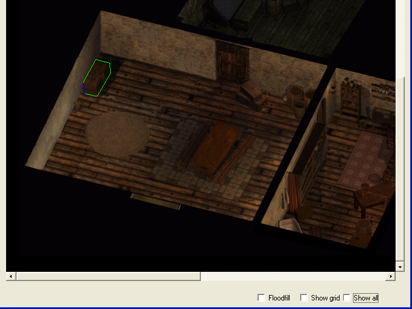 Image 7 - Container outline |
If you are not happy with the size or shape of the polygon, go back the Edit Polygon screen and
The Polygon Editor is now in Modify mode. Click on anyone of the listed vertices and you will see it light up in the Preview screen as a red dot. When you've identified the one that you are not happy with, click on the screen at the place you would like that vertex to be and DLTCEP will move it for you. Alternatively, double-click on it and DLTCEP will delete it. When you are satisfied,
That completes a simple, non-trapped container.
|
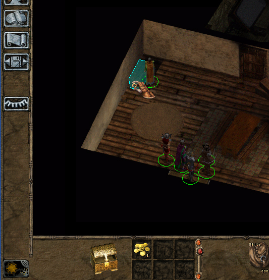 Image 8 - The new container in use |
Part of the plot with Porthpentyrch involves CHARNAME being asked by Elminster to investigate why the town is being deserted by the inhabitants, hence the abandoned house above. They do return - after CHARNAME has sorted the problem - and so for the trapped chest, I'm going to use the same house and chest as above but with the house now lived-in. As the owner has returned, he has put trap spells onto the chest which contains one of his most precious posessions. I'm going to start where we left off with the simple container.
|
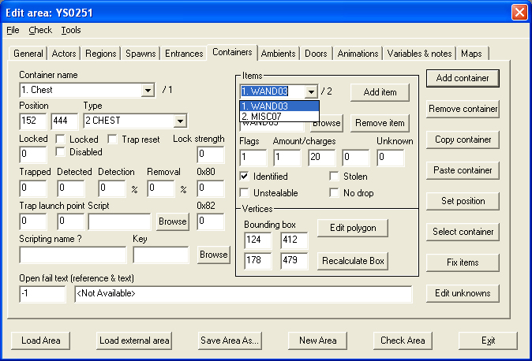 Image 9 - The treasured posession |
Just to be nice, I've also put some more gold into the chest; note that the wand has been given 20 charges. Setting the trap is fairly easy:-
We need to enter the Trap Launch Point but for some reason there is not ability to bring up the preview screen and select a point by clicking on it. You need to enter the co-ordinates manually. We can get DLTCEP to help us though.
This brings up the Preview screen. Now,
|
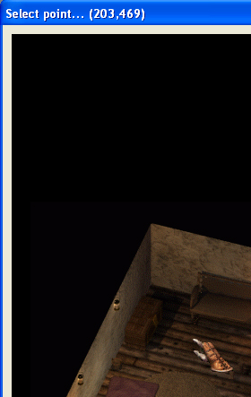 Image 10 - Detection distance |
If the PC fails to disarm the trap, I've decided to hit them with a flamestrike. Most of the container traps start with CT (no surprises there!), so take your pick.
Our trapped container is now basically complete. There is no need to enter a displaystring because the Infinity Engine will automatically show 'Locked' if the PC fails to open the lock.
|
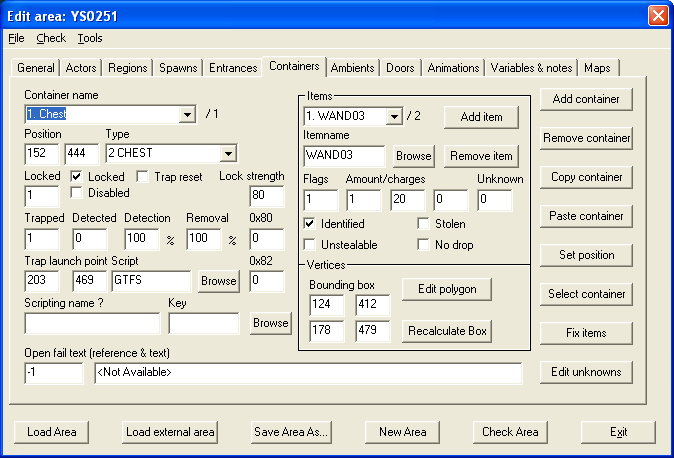 Image 11 - Completed trapped container |
Of the remaining two fields, the Key field is obvious. The Scripting Name field is the name you will give to the container if you wish to refer to it in a script e.g. MyBox.
IF Global("OpenContainer","GLOBAL",1) THEN RESPONSE #100 Open("MyBox") END
|
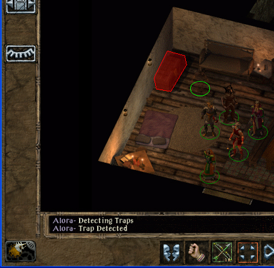 Image 12 - Aha! Naughty! |
|
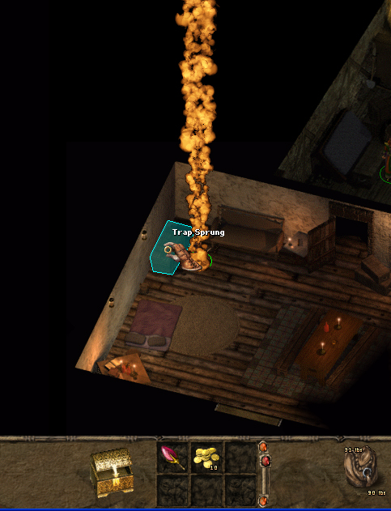 Image 13 - Oh sh!t!! |
|
Tutorial written by Yovaneth, apprentic’d at Candlekeep during the Bhaalspawn Troubles. Post it where you will but please don’t take credit for what you have not written. |